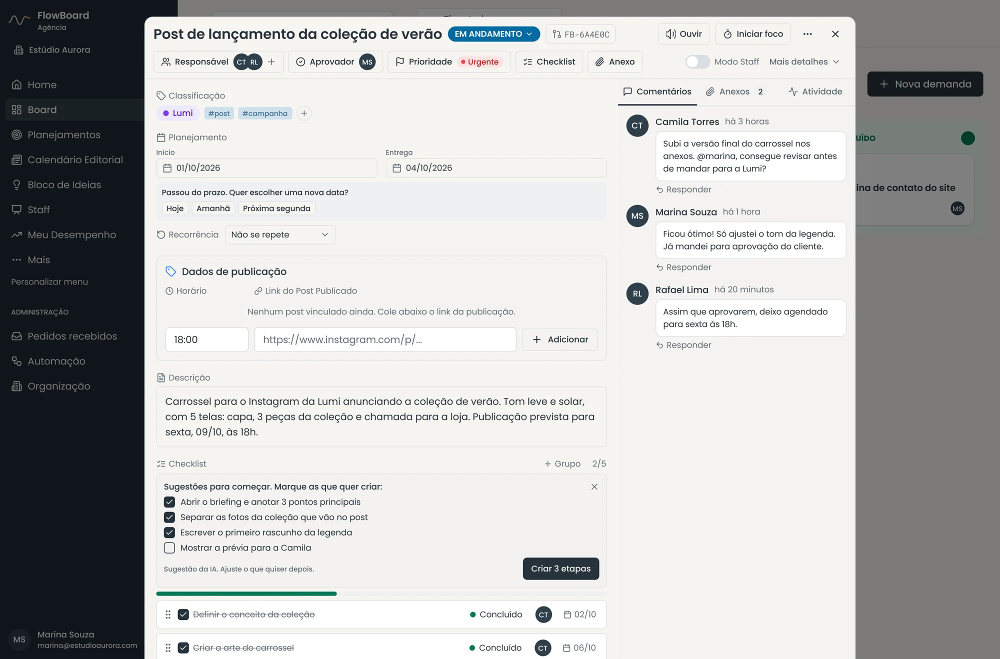
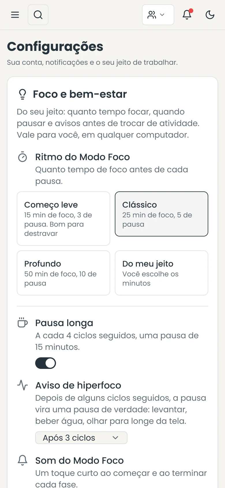
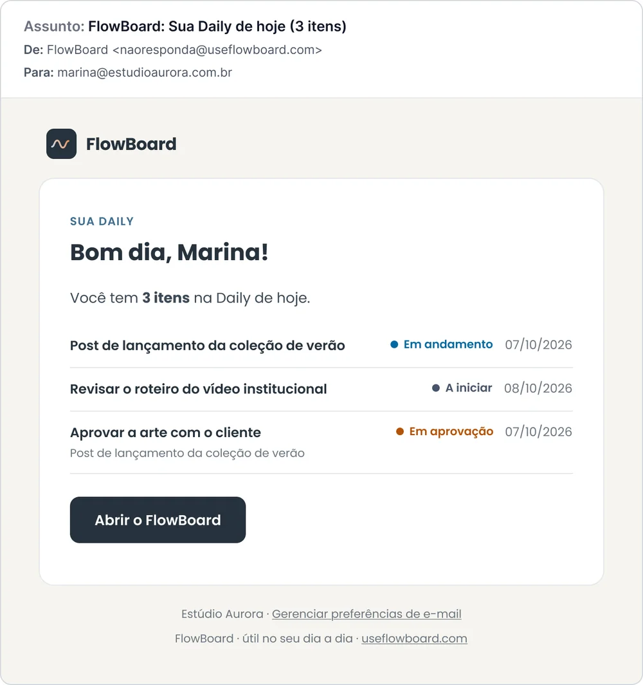
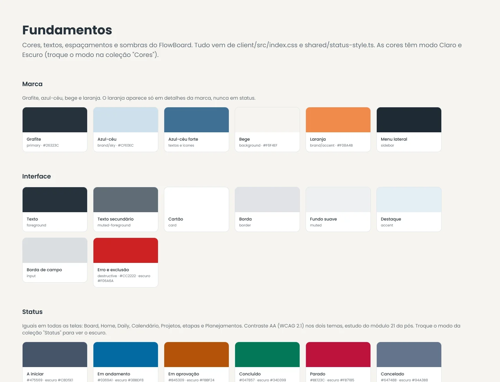
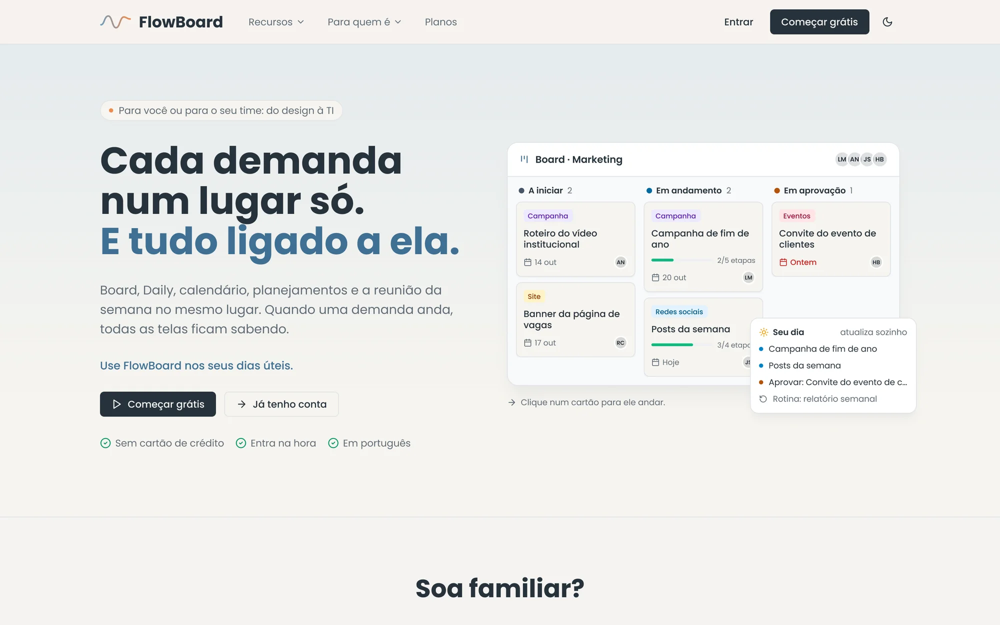
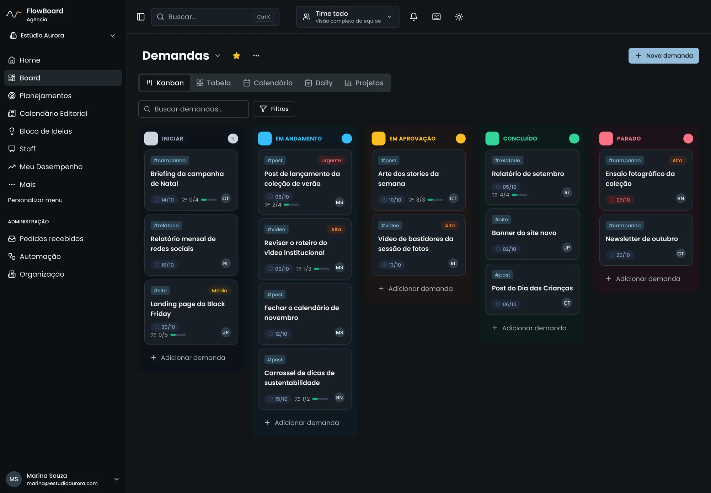
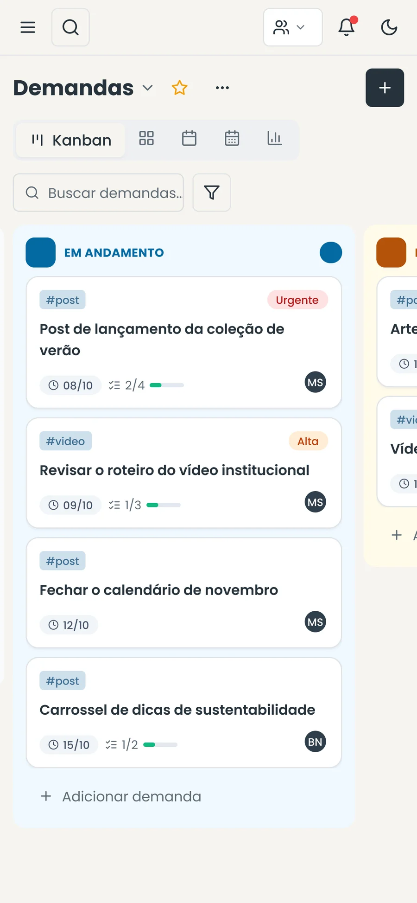

FlowBoard · Case study
Work shouldn't require you to hold everything in your head.
How a tool I built to cope with my own ADHD became a request management product for communications teams: origin, research, design decisions, testing and what I learned along the way.
The origin
FlowBoard didn't come from market research. It came at a turning point in my career: I was becoming more senior and had to organise my own deadlines and requests. But I couldn't keep the state of my work in my head. I kept building small fixes so I wouldn't lose the thread: a list here, a board there, a nudge that arrived before the deadline. At some point those pieces came together and became a product.
My ADHD diagnosis came after the tool, and it explained why those fixes worked. Being organised doesn't have to be a talent each person either has or lacks. It can be a condition the tool provides.
That changed how I design. Working memory, sense of time and tolerance to stimulus became scarce resources, and every screen has to spare all three. When it works for someone with ADHD, it usually works better for everyone.
Work shouldn't require you to hold everything in your head.
The problem
Communications teams get requests from everywhere: email, chat, meetings, hallway conversations. Requests arrive fast and get lost fast, and whoever handles them becomes the memory of the process. To know what is late, awaiting approval or stuck, someone has to ask.
So I wouldn't design from my own experience alone, I ran a field survey with 28 respondents. I expected to hear about workload and distraction. The biggest difficulty they named was something else: depending on someone else and not knowing where things stand. Six answers described some version of “I keep waiting and don't know if it's done yet”.
- 28field survey respondents
- 50%work more remotely than they did in the office
- 43%sometimes can't switch off
The last two numbers showed that the problem doesn't end at delivery. Nothing signals that the day is over, and that is one more thing the mind has to hold.
Who it is for
For teams that live by requests and deadlines: communications, marketing, creative, agencies and studios serving several clients or departments at once. The product has two sides, and one person who can be on either of them.
- Requesters
Want to file a request in a few fields and follow it without sending a message to ask.
- The team
Need a clear queue, to know what to do now and to be able to show what is stuck and why.
- People who get distracted easily
Freeze when starting or lose track of time. This person isn't an edge case: they are the design criterion.
Design decisions
The request at the centre
Board, table, calendar, daily and projects are five ways of looking at the same request. No new screen becomes a separate system, because every extra system is one more thing to remember to feed.

Progress visible without asking
Status, owner, deadline and steps live on the card itself, and the bar shows how much of the checklist is done. Requesters see where things are without messaging anyone, and a paused request keeps the reason it was paused. It is the direct answer to what the survey pointed out.

Optional focus, no labels
Focus features are described by situation, not by diagnosis: gentle nudges, suggestions, calm mode and comfortable reading. Nobody has to identify themselves to switch on what helps, and those who don't need it see nothing extra.


The day has a start and an end
The daily opens the day with what matters most. Notifications arrive grouped in a digest instead of pinging all day, and an end-of-day moment closes the day explicitly. These features exist for mental health, not interface convenience.


Colour with a fixed job
The “graphite and sky” identity uses graphite, sky blue and beige, with orange only in small brand details. Status colours never mix with the brand, because a colour that changes meaning makes people relearn the screen. It all became a Figma design system, with light and dark variables mirroring the code.

The process
Much of this process gained method during my postgraduate course in UX/UI and Digital Products at EBAC, which I'm now finishing. I used FlowBoard as the subject of every assignment, so each stage below was done on the real product, not on a made-up case.
- Field research
28 respondents and one open question that changed the product's priorities: waiting weighed more than distraction.
- Heuristics and references
I reviewed work management tools through the lens of working memory, sense of time and stimulus load.
- Low fidelity
Wireframes to get each screen's hierarchy right before thinking about colour.
- Design system
Colour, type, spacing and components in Figma, with light and dark variables matching the code tokens.
- High-fidelity prototype
More than 120 screens in Figma, with the main flows clickable on desktop and mobile.
- Usability testing
An unmoderated test script with four hypotheses and two missions: create a request and complete a step. I built it in Maze with the Figma prototype, set the expected path for each mission and ran a full dry run before opening it. The round with five participants is the next step.
- Code
I code what I design, in React and TypeScript. The distance between a decision and a working screen stays short.
In numbers
- 28field survey respondents
- +120screens designed in Figma
- 4usability test hypotheses
- 5ways to view the same request
Screens



What I learned
- The research corrected my hypothesis.
I thought the main problem was distraction. The answers pointed to waiting. That became the next improvement to the queue: showing how long a request has been stuck and who needs to act to unblock it.
- Cognitive accessibility is good design for everyone.
The features that started out for me, like a day with an end, grouped notifications and less on-screen stimulus, are the ones that make the most sense for the whole team.
- Write down the hypothesis I want to break.
In the test script I wrote down which hypothesis I expected to fail: that the progress bar, sitting next to the deadline, would be read as time elapsed instead of steps completed. Knowing where I might be wrong makes the test more honest.
- Designing and coding the same thing.
With Figma variables mirroring the code, every design decision comes with a known cost. That pushed me to decide early and to think twice before every new screen.
Next steps: run the test with five people, bring time-stuck onto the card and turn priority into a rule the whole team can see, rather than a call made by whoever handles the request.
FlowBoard: useful on every working day.
Board, daily, editorial calendar and team requests in one place. Made by someone who works in creative and communications, for teams that live by deadlines.